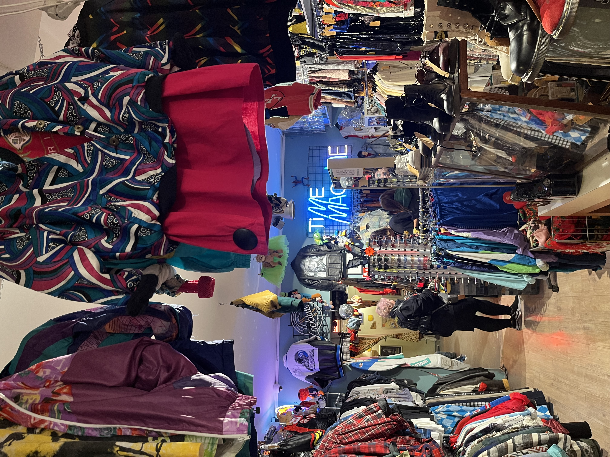

Hallo! Wij zijn het initiatief De Vintage Fabriek. Hiermee willen wij mensen aanmoedigen om deels,
of zelfs volledig over te stappen op het kopen van tweedehands kleding. De kledingindustrie is namelijk
enorm vervuilend voor het milieu, en daar kunnen wij samen iets aan doen!
Hallo! Wij zijn het initiatief De Vintage Fabriek. Hiermee willen wij mensen aanmoedigen om deels,
of zelfs volledig over te stappen op het kopen van tweedehands kleding. De kledingindustrie is namelijk
enorm vervuilend voor het milieu, en daar kunnen wij samen iets aan doen!
Tweedehands kleding is niet alleen heel mooi, maar ook een stuk goedkoper dan fast fashion. Ben je een fan van merkkleding? Geen zorgen, daar is ook meer dan genoeg van te vinden in vintage winkels. Ook is de kleding die je vind veel unieker! Er is vaak namelijk maar één excemplaar van te vinden in een vintage store, in plaats van een heel rek vol met hetzelfde kledingstuk. 